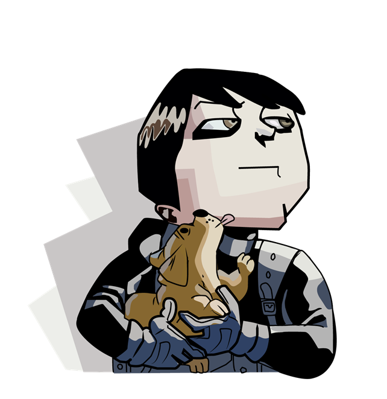

Five Hargreeves, ou número cinco em português, é um personagem da série e hq, The Umbrella Academy. Este possui poderes de teletransporte e viagem no tempo, além de ser um assassino geneticamente modificado para matar toda e qualquer pessoa. Ele tem quase 50 anos de idade, no entanto, está preso no corpo de uma criança de 12 anos.
